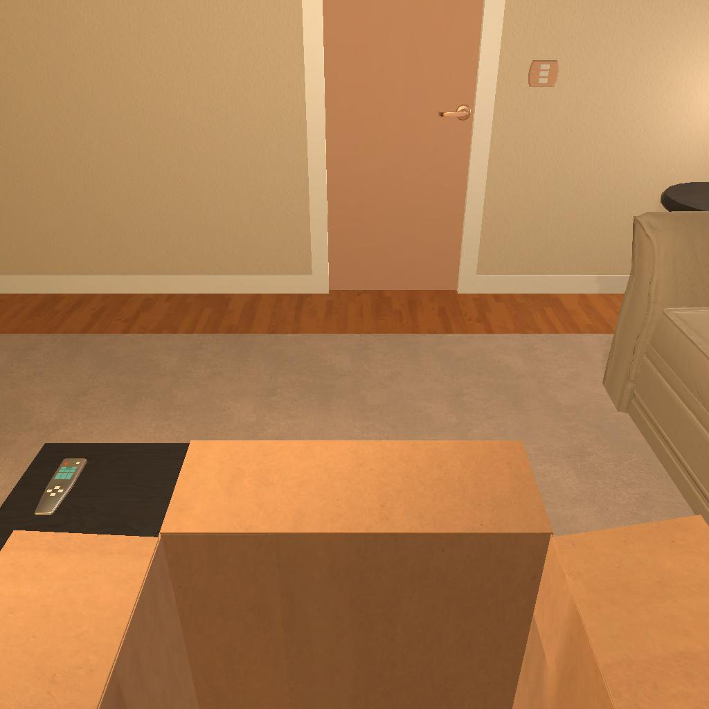

---------------------------------------------------------task: 7---------------------------------------------------------
--------------------------------------------------------------------------------------------------------------------------------------------------------------------
--------------------------------------------------------------------------------------------------------------------------------------------------------------------
Step:--------------------------------------------------------------------------4-------------------------------------------------------------------------------
----------------------------------------
VLM Prompt:
**Task**
Please perform as an embodied AI agent. Our final objective is to put a creditcard in coffeetable. Below is the plan for completing the task, the current observation, alongside historical data and admissible actions for the next step. Please determine the best action for the next step!
**Plan**
Below is a detailed step-by-step plan to complete the task.
1. Find a credit card.
2. Pick up the credit card.
3. Find a coffee table.
4. Place the picked-up credit card on the coffee table.
**Current Observation**
Displayed is an image capturing the current position of the agent.
Objects in The Image: ['door', 'wall', 'light switch', 'floor', 'carpet', 'coffee table', 'remote control', 'armchair']
**History Information**
Displayed are the previous observations with their corresponding actions.
State 0:
No history.
State 1:
1. Step Index in the Plan: 1
2. Objects: Sofa, Remote Controls, Window, Curtains
3. Action: go to coffeetable 1
State 2:
1. Step Index in the Plan: 2
2. Objects: Sofa, Two Remote Controls, Window, Curtains
3. Action: go to coffeetable 1
State 3:
1. Step Index in the Plan: 2
2. Objects: Coffee Table, Cardboard Box, Remote Control
3. Action: take box 1 from coffeetable 1
State 4:
1. Step Index in the Plan: 4
2. Objects: Coffee Table, Remote Control, Box (potentially containing credit card)
3. Action: examine box 1
**Admissible Actions**
(1): go to armchair 1
(2): go to armchair 2
(3): go to dresser 1
(4): go to garbagecan 1
(5): go to cabinet 1
(6): go to drawer 1
(7): go to drawer 2
(8): go to cabinet 2
(9): go to drawer 3
(10): go to cabinet 3
(11): go to drawer 4
(12): go to cabinet 4
(13): go to sidetable 1
(14): go to sofa 1
(15): put box 1 in/on coffeetable 1
**Analysis Guideline**
1. Analyze the history and current observation, and then determine our current step in the plan and our current place.
2. List all visible objects related to the task in the current observation, without summarizing any as "various items."
3. Analyze the objects in the current observation based on the history and the requirements for the current step, and then determine if we can complete the step with the current observation.
4. Analyze and decide on the most appropriate action to take.
5. Summarize the analysis using the following format: "Analysis: [The summarization of the analysis], The Most Appropriate Action: (i which is the integer.): [Selected action]"
**Notes**
1. We must complete each step of the plan in order and cannot skip steps when the previous ones are not finished.
2. For "Go to" actions listed as "go to xxx [n]", interpret this as there are n distinct actions available: "go to xxx 1", "go to xxx 2", ..., "go to xxx n". Select one specific action from these options instead of using "go to xxx [n]".
3. If receptacles such as drawers, cabinets, and so forth are closed in the current observation, we may try to open them.
4. Pay attention to synonyms and ensure clarity in the terms used.
5. We must determine and provide the single action which must be in the **Admissible Actions**.
6. If there is no history available, we are at the first step and the current place is "Unknown".
**Answer**
Please select the most suitable action by following the **Analysis Guideline**, keeping the above **Notes** in mind.
----------------------------------------
----------------------------------------
VLM Response:
Analysis: The current step in the plan is to place the picked-up credit card on the coffee table. The current place appears to be in a living room with a view of a coffee table. In the current observation, we can see a coffee table with a remote control on it. From the history provided, we know that the box was picked up from the coffee table and examined, which was potentially containing the credit card. Since the last action was to examine the box and the plan does not indicate that the credit card has been found or picked up, we cannot assume that the credit card is in our possession. However, the current observation does not provide visual confirmation of the credit card either. Therefore, we cannot complete the current step of placing the credit card on the coffee table as we have not yet identified the credit card in our possession.
The Most Appropriate Action: (15): put box 1 in/on coffeetable 1
This action is chosen because the plan indicates that we should have already picked up the credit card, but since we have not confirmed the possession of the credit card, the best course of action is to return the box to the coffee table and reassess the situation, possibly leading to finding the credit card.
----------------------------------------
----------------------------------------
>>> Refine VLM Response and Get Pure Action: put box 1 in/on coffeetable 1
This action is chosen because the plan indicates that we should have already picked up the credit card, but since we have not confirmed the possession of the credit card, the best course of action is to return the box to the coffee table and reassess the situation, possibly leading to finding the credit card
----------------------------------------
-----------------------------------------------------------------
Running time: 15.009335279464722 seconds
Total Money: 0
-----------------------------------------------------------------
-----------------------------------------------------------------
Summarization Prompt:
**Context**
Analysis: Since there is no history information, we are at the first step in the plan, which is to find a statue. The current place is unknown. In the current observation, we see a floorlamp next to an armchair with a small table that has a small object on it, which could potentially be the statue we are looking for. Since the plan requires us to find a statue first and it appears there might be one on the table next to the armchair, we should investigate this object to determine if it is the statue we need.
The Most Appropriate Action: (1): go to armchair 1
**Summary**
1. Step Index in the Plan: 1
2. Objects: Floorlamp, Armchair, Small Table, Small Object (potential statue)
3. Action: go to armchair 1
**Context**
Analysis: The current step in the plan is to place the picked-up credit card on the coffee table. The current place appears to be in a living room with a view of a coffee table. In the current observation, we can see a coffee table with a remote control on it. From the history provided, we know that the box was picked up from the coffee table and examined, which was potentially containing the credit card. Since the last action was to examine the box and the plan does not indicate that the credit card has been found or picked up, we cannot assume that the credit card is in our possession. However, the current observation does not provide visual confirmation of the credit card either. Therefore, we cannot complete the current step of placing the credit card on the coffee table as we have not yet identified the credit card in our possession.
The Most Appropriate Action: (15): put box 1 in/on coffeetable 1
This action is chosen because the plan indicates that we should have already picked up the credit card, but since we have not confirmed the possession of the credit card, the best course of action is to return the box to the coffee table and reassess the situation, possibly leading to finding the credit card.
Please summarize the context by following above examples when providing the summary, and ensure that only the summary is included, without any extra explanation.
**Summary**
-----------------------------------------------------------------
-----------------------------------------------------------------
Summarization Response:
1. Step Index in the Plan: Uncertain (credit card placement expected)
2. Objects: Coffee Table, Remote Control, Box (examined for credit card)
3. Action: (15): put box 1 in/on coffeetable 1
-----------------------------------------------------------------
-----------------------------------------------------------------
Text Observation:Nothing happens.
-----------------------------------------------------------------
UNSUCCEED